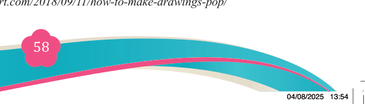
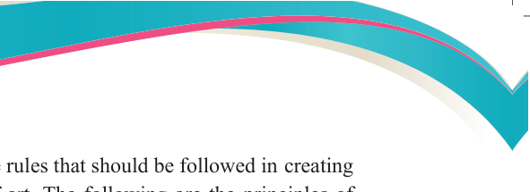
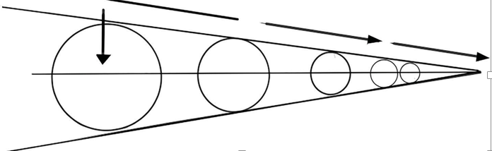
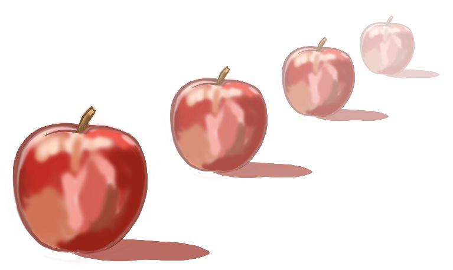

Fine Art for Secondary Schools

58


Student’s Book Form Two

Principles of perspective
The principles of perspective are rules that should be followed in creating a realistic and pleasing work of art. The following are the principles of

perspective.
(i) Size and space variation
Size and space variation is the tendency in nature whereby size and space
between objects tend to look bigger when close to the viewer and smaller when far from the viewer. In real environment, objects look different from the way they are.
If one observes a row of same sized objects, the size will decrease and the space between them will get smaller in a long distance. This is the feeling we get when observing objects in the real world. Observe Figure 3.30 (a & b) to see how size and space is changing in distance.

(a)

(b)
Figure 3.30 (a & b): Size and space variations in perspective
Source: https://rapidfireart.com/2018/09/11/how-to-make-drawings-pop/
04/08/2025 13:54